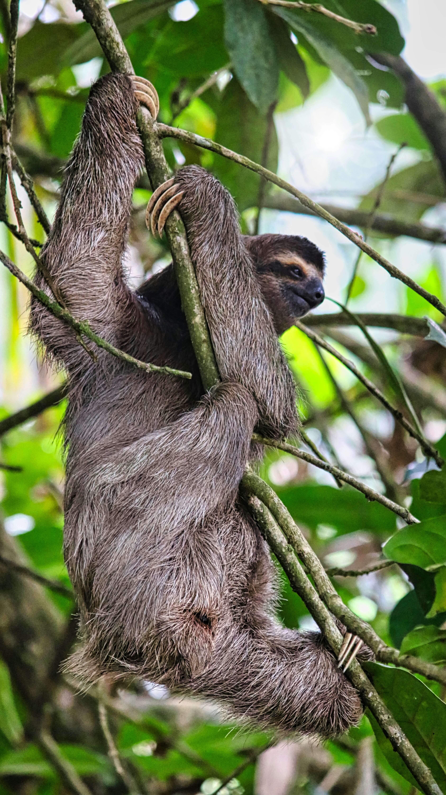

Sloth Watching in La Fortuna: Where to Find Them
Discover the best trails to see perezosos in their natural habitat.

Seeing a sloth is the highlight of many trips to Costa Rica. Fortunately, La Fortuna (San Carlos) is one of the best places in the country to spot them. Here, you can find both the Two-toed sloth and the Three-toed sloth living in the Cecropia trees just minutes from the town center.
Best Sloth Watching Trails
Bogarin Trail
Located right next to downtown La Fortuna. It's a flat, easy trail famous for having a high density of sloths. Great for families and birdwatchers.
Sloth Watching Trail
A private reserve located 5 minutes from the park. They offer guided tours with telescopes, which are essential for seeing sloths high in the canopy.
Tips for Spotting Wildlife
Wildlife in the rainforest is experts at camouflage. If you want to have a successful "sloth hunt," follow these local tips:
- Look for Cecropia Trees: These trees with large, hand-shaped leaves are the favorite food and sleeping spot for sloths.
- Hire a Guide: We can't stress this enough. Sloths look like clumps of moss from the ground. A guide with a professional telescope will help you see their faces, fingers, and even babies!
- Be Quiet: Although sloths move slowly, they are sensitive to noise. Other animals like monkeys and toucans will stay closer if you are quiet.
- Don't Forget Binoculars: Essential for seeing the details of their fur and slow movements.
Is it possible to see them for free?
While not guaranteed, it is common to see sloths in the trees along the main roads leading out of La Fortuna (Route 142). If you see a group of cars pulled over to the side of the road and people looking up, there's a 90% chance there's a sloth or a family of monkeys in that tree!